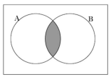
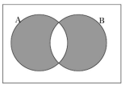
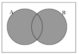
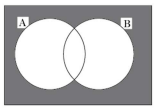

問題６
2 進数（1.011）を10 進数で 表現したものはどれか。
ア．1.005
イ．1.25
ウ．1.375
エ．1.625
2 進数（1.011）を10 進数で 表現したものはどれか。
ア．1.005
イ．1.25
ウ．1.375
エ．1.625
8 進数（36）を16 進数で 表現したものはどれか。
ア．1D
イ．1E
ウ．2D
エ．2E
10 進数の2、5、10、21を、 五つの 升目の 白黒で 次のように 表す。
| 2 | □□□■□ |
| 5 | □□■□■ |
| 10 | □■□■□ |
| 21 | ■□■□■ |
12
イ．14
ウ．16
エ．18
2 進数（11001）を3 倍したものはどれか。
ア．01001011
イ．01011001
ウ．01111101
エ．11001000
二つの 集合AとBの 和集合（A∪B）を 表すベン 図はどれか。なお、ベン 図では 集合が 意味する 部分を 網掛けで 示している。
ア． イ． ウ． エ．